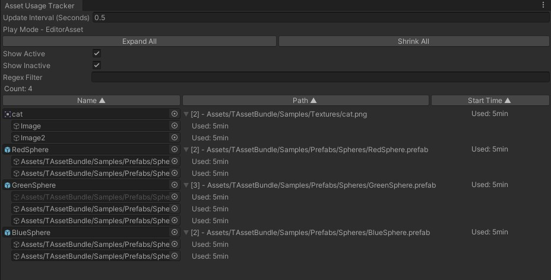

TAssetBundle
TAssetBundle is a powerful, integrated asset bundle management system.
Index
- Using an TAssetBundle Asset
- Using AssetManager
- Play with Assets Directly (Only Editor)
- Play with Asset Bundle
- Remote Assets Download
- TAssetBundleManifest
- Default Composition Strategies
- TAssetBundle Menu
- TAssetBundle Browser
- TAssetBundle Settings
Using an TAssetBundle Asset
TAssetBundle provides two ways to load assets.
Using Asset Path
The asset path is the full path to the asset and needs to be modified if the asset is moved.
How do you get the asset path?
using UnityEngine;
using TAssetBundle;
public class TestLoadAsset : MonoBehaviour
{
public string prefabPath; //Asset Path
void Awake()
{
//Load as Asset Path
var loadAsset = TAssetBundles.LoadAssetAsync<GameObject>(prefabPath);
loadAsset.OnComplete += (AssetHandle<GameObject> assetHandle) =>
{
var asset = assetHandle.Get();
//use asset
Instantiate(asset);
};
}
void OnDestroy()
{
//Unload as Asset Path
TAssetBundles.UnloadAsset(prefabPath);
}
}
Using Asset Reference
Asset references allow you to drag and drop or select assets in the editor.
Asset references remain intact even if the asset is moved.
using UnityEngine;
using TAssetBundle;
public class TestLoadAssetReference : MonoBehaviour
{
[AssetType(typeof(GameObject))]
public AssetRef prefab;
private AssetHandle prefabHandle;
void Awake()
{
//Load as Asset Reference
var loadAsset = TAssetBundles.LoadAssetAsync<GameObject>(prefab);
loadAsset.OnComplete += (AssetHandle<GameObject> assetHandle) =>
{
prefabHandle = assetHandle;
var asset = assetHandle.Get();
//use asset
Instantiate(asset);
};
}
void OnDestroy()
{
//Unload as Asset Handle
TAssetBundles.UnloadAsset(prefabHandle);
}
}
Using AssetManager
AssetManager provides methods to load, unload, and manage assets and prefabs using TAssetBundle for efficient asset management. It supports asynchronous loading, unloading of unused assets, and pooling of prefabs.
When an asset loaded using AssetManager is linked to a GameObject, it can be tracked by the Asset Usage Tracker.
Loading Assets and Unloading Unused Assets
using UnityEngine;
using TAssetBundle;
using TAssetBundle.Extensions;
public class TestAssetManagerLoadAsset : MonoBehaviour
{
public Image imageManualLink;
public Image imageAutoLink;
/// <summary>
/// Path to the sprite asset.
/// </summary>
public string spritePath;
private void Start()
{
// Load sprite asynchronously and set it to the image.
AssetManager.LoadAssetAsync<Sprite>(spritePath).OnCompleted += asset =>
{
// Use the loaded sprite
imageManualLink.sprite = asset.Get();
// Link the asset to the game object. The asset's usage count decreases automatically
// when the game object is destroyed. If usage count reaches zero, the asset will be unloaded.
// A GameObject can only be linked to one asset.
imageManualLink.LinkAsset(asset);
};
// Load sprite asynchronously and link it to the game object.
AssetManager.LoadAssetAsync<Sprite>(imageAutoLink.gameObject, spritePath).OnCompleted += asset =>
{
// Use the loaded sprite
imageAutoLink.sprite = asset.Get();
};
}
private void OnGUI()
{
if(GUILayout.Button("Remove All"))
{
///When all GameObjects linked to an asset are destroyed, the asset becomes unused.
GameObject.Destroy(imageManualLink.gameObject);
GameObject.Destroy(imageAutoLink.gameObject);
}
if(GUILayout.Button("Unload Unused Assets"))
{
///Immediately unload assets that are not in use.
AssetManager.UnloadUnusedAssets();
}
}
}
Loading and Instantiating Prefabs with Asset Manager
using UnityEngine;
using TAssetBundle;
using TAssetBundle.Extensions;
public class TestAssetManagerGetPrefab : MonoBehaviour
{
/// <summary>
/// Prefab Asset Reference.
/// </summary>
public GameObjectAssetRef prefab;
private void Start()
{
/// Loads a prefab asset and instantiates it.
/// Links the instantiated GameObject with the asset to track the asset's usage.
AssetManager.GetPrefabAsync(prefab, transform).OnCompleted += go =>
{
go.name = prefab.Path;
};
}
private void OnGUI()
{
if(GUILayout.Button("Remove GameObject"))
{
var go = GameObject.Find(prefab.Path);
if(go != null)
{
//When a GameObject is destroyed, the usage count of the linked asset decreases.
GameObject.Destroy(go);
}
}
if(GUILayout.Button("Unload Unused Assets"))
{
///Immediately unload assets that are not in use.
AssetManager.UnloadUnusedAssets();
}
}
}
Asset Usage Tracker
Run TAssetBundle/Extensions/Asset Usage Tracker from the menu.
During play mode in the editor, it tracks the assets loaded through AssetManager and their linked GameObjects.

Play with Assets Directly (Only Editor)
Using assets directly allows you to run right away without having to configure or build asset bundles.
Select TAssetBundle/Settings Menu
Select Editor Play Mode as Editor Asset
Play!!
Play with Asset Bundle
TAssetBundle uses your project's folder structure to organize and build asset bundles according to your preferences.
To play with AssetBundles, you must first configure the AssetBundle using TAssetBundleManifest.
- What is TAssetBundleManifest
- Create TAssetBundleManifest
- Configure AssetBundle
- Build Asset Bundle
- Editor Play Mode to AssetBundle
What is TAssetBundleManifest
- You can manually configure AssetBundles for the assets in a folder or automatically configure them using a composition strategy.
- Enables the setup of built-in options, encryption, tags, etc., for the AssetBundle.
- Provides information about the configured AssetBundle.
Create TAssetBundleManifest
Create TAssetBundleManifest in the folder where you want to bundle assets.
Select TAssetBundleManifest file
Configure AssetBundle
There are two ways to organize your AssetBundles.
Manual Configuration
Add asset bundle build information
Finish!
Auto Configuration
Automatically configure AssetBundles using a Composition Strategy
What is Composition Strategy
- individual composition strategy to configure AssetBundle in TAssetBundleManifest
- Run Composition Strategy from the context menu will run the strategies in the order listed.
Add Composition Strategy
Select all_together Composition Strategy
all_together is a strategy to organize assets in a folder into one AssetBundle.
Run Composition Strategy in the context menu of TAssetBundleManifest
Finish!
Build Asset Bundle
Build asset bundle
Editor Play Mode to AssetBundle
Select TAssetBundle/Settings Menu
Select Editor Play Mode as Asset Bundle
Play!!
Remote Assets Download
Flow of Remote Assets Download
- Check for Catalog Update
- Update the Catalog
- Get the Download Size
- Download the Assets
- Downloaded assets are cached and will not be downloaded again.
using UnityEngine;
using TAssetBundle;
public class RemoteDownloadAssets : MonoBehaviour
{
public string remoteDownloadUrl; //your remote storage address
public GameObjectAssetRef needDownloadAsset;
private void Awake()
{
//[BuildTarget] in url will be changed to your BuildTarget
TAssetBundles.SetRemoteUrl(remoteDownloadUrl);
}
private void OnGUI()
{
GUILayout.BeginVertical(GUI.skin.box);
if (GUILayout.Button("Check Catalog Update"))
{
var checkCatalogUpdateAsync = TAssetBundles.CheckCatalogUpdateAsync();
checkCatalogUpdateAsync.OnComplete += (result) =>
{
text.text = "need catalog update - " + result;
};
}
if (GUILayout.Button("Update Catalog"))
{
var updateCatalogAsync = TAssetBundles.UpdateCatalogAsync();
updateCatalogAsync.OnComplete += (result) =>
{
text.text = "update catalog - " + result;
};
}
if (GUILayout.Button("Get Download Size All"))
{
var downloadSizeAsync = TAssetBundles.GetDownloadSizeAsync();
downloadSizeAsync.OnComplete += size =>
{
text.text = "download size - " + FileSizeFormmater.FormatSize(size);
};
}
if (GUILayout.Button("Download All"))
{
var downloadAsync = TAssetBundles.DownloadAsync();
downloadAsync.OnProgress += OnDownloadProgress;
downloadAsync.OnComplete += OnDownloadComplete;
}
if (GUILayout.Button("Get Download Size By Tags"))
{
var downloadSizeAsync = TAssetBundles.GetDownloadSizeByTagsAsync(new string[] { "character" });
downloadSizeAsync.OnComplete += size =>
{
text.text = "download size - " + FileSizeFormmater.FormatSize(size);
};
}
if (GUILayout.Button("Download By Tags"))
{
var downloadAsync = TAssetBundles.DownloadByTagsAsync(new string[] { "character" });
downloadAsync.OnProgress += OnDownloadProgress;
downloadAsync.OnComplete += OnDownloadComplete;
}
if (GUILayout.Button("Get Download Size By Assets"))
{
var downloadSizeAsync = TAssetBundles.GetDownloadSizeByAssetsAsync(new AssetRef[] { needDownloadAsset });
downloadSizeAsync.OnComplete += size =>
{
text.text = "download size - " + FileSizeFormmater.FormatSize(size);
};
}
if (GUILayout.Button("Download By Assets"))
{
var downloadAsync = TAssetBundles.DownloadByAssetsAsync(new AssetRef[] { needDownloadAsset });
downloadAsync.OnProgress += OnDownloadProgress;
downloadAsync.OnComplete += OnDownloadComplete;
}
if (GUILayout.Button("Load TestScene"))
{
TAssetBundles.LoadSceneAsync(testScene);
}
if (GUILayout.Button("Clear Cached Asset Bundles"))
{
Util.ClearCachedAssets();
}
GUILayout.EndVertical();
}
private void OnDownloadProgress(AssetBundleDownloadInfo downloadInfo)
{
double value = downloadInfo.DownloadedSize / (double)downloadInfo.TotalDownloadSize;
text.text = string.Format("downloading - {0:0.00}%, {1}/{2}",
value * 100,
FileSizeFormmater.FormatSize(downloadInfo.DownloadedSize),
FileSizeFormmater.FormatSize(downloadInfo.TotalDownloadSize));
}
private void OnDownloadComplete(AssetBundleDownloadInfo downloadInfo)
{
if (downloadInfo.TotalDownloadSize == 0)
{
text.text = "don't need to download";
}
else if (downloadInfo.IsDownloadComplete())
{
text.text = "download complete";
}
else
{
text.text = "download fail";
}
}
}
TAssetBundleManifest
- If enabled, it is included in the AssetBundle build target.
- If built-in is enabled, the configured AssetBundles are included in the app.
- If encrypt is enabled, it encrypts the configured AssetBundle.
- Set tags for configured AssetBundles.
- A list of composition strategies, strategies are always run in order.
- AssetBundle build list, AssetBundle build information that has been configured.
Default Composition Strategies
- all_separatly: Add assets as individual asset bundles.
- all_together: Add assets as one asset bundle.
- clear: Clear asset bundle build information.
- exclude_objects: Exclude specific assets from asset bundle build information.
- file_separatly: Add only the files as individual asset bundles.
- file_together: Add only the files as one asset bundle.
- fixed_objects: Add only specific assets to one asset bundle.
- folder_separatly: Add only folders as individual asset bundles.
- fodler_together: Add only the folder as one asset bundle.
- regex_match: Only assets whose file names match the regular expression are added to one asset bundle.
- regex_match_delete: Remove asset bundle build information if asset filename matches regular expression
- regex_not_match_delete: Remove AssetBundle build information if asset file name does not match regular expression
- same_name_together: Add assets with the same file name as one asset bundle
TAssetBundle Menu
- Open TAssetBundle Settings File
- Remove build cache information for current platform
- Build Asset Bundle
- Run the composition strategy on all TAssetBundleManifest
- Clear AssetBundle build information for all TAssetBundleManifest using Composition Strategy
- Open Build Output Folder
- Open Download Cached Assets Folder
- Remove Download Cached Assets
- Open TAssetBundle Browser
- Open Tag Editor
- Open Web Server Test Window
- Open AssetBundle Dependency Checker
- Open Asset Reference Tracker
TAssetBundle Browser
The TAssetBundle Browser is a browser that allows you to view all TAssetBundleManifests and current AssetBundle information at once.
Select TAssetBundle/TAssetBundle Browser Menu
- Clear AssetBundle build information for all TAssetBundleManifest using Composition Strategy
- Run the composition strategy on all TAssetBundleManifest
- Build Asset Bundle
- Check dependencies between AssetBundles
- Total Asset Bundle Count
- A single AssetBundle build name and the assets it contains
- TAssetBundleManifest and file path
- Count of AssetBundles configured in TAssetBundleManifest
- Assets not yet configured as AssetBundle in TAssetBundleManifest
TAssetBundle Settings
All settings used by TAssetBundle
- The name of the catalog file generated when building the AssetBundle
- AssetBundle Build Output Folder Name
- Catalog file extension
- Asset Bundle file extension
- Enable catalog compression
- Enable catalog encryption
- encryption key
- Add the hash of the asset bundle file name
- Editor Play Mode (Editor Only)
- Forced in editor to use only remote AssetBundles. (Editor only)
- Maximum count of concurrent web requests
- Maximum count of web request retries
- Retry request wait duration
- Using the build cache only builds the AssetBundles that need to be built.
- Enable Debugging Log
- Include catalog in app
- How to embed AssetBundles into app
- Recompress the AssetBundles built-in in your app to lz4 (very efficient, but slightly increases file size).
- If enabled, the UnityRemoteAssetBundleProvider is used. When disabled, always uses a SpecificManagedAssetBundleProvider. SpecificManagedAssetBundleProvider are default used for crypto asset bundles.
- Set the custom catalog serializer
- Set the custom crypto serializer
- Set default remote url